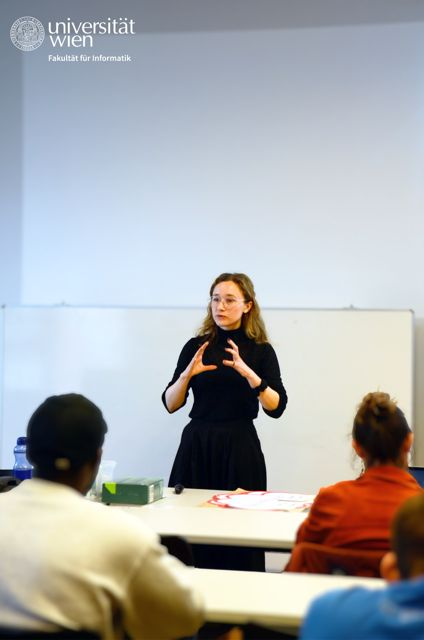
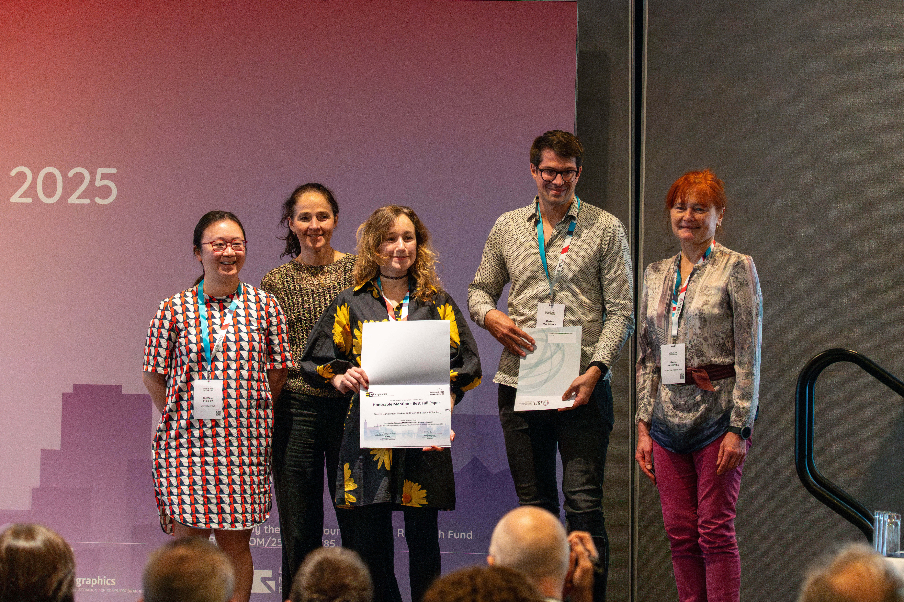
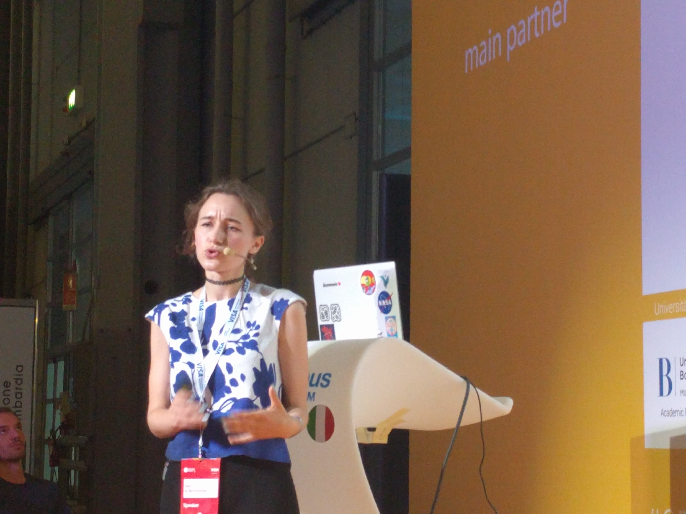

Graph Drawing
Algorithms and models for layered graphs, hypergraphs, and multi-perspective network layouts.
Computer Science / Data Visualization
I am a Senior Postdoc working in data visualization and graph drawing.
I am currently working in the Algorithms and Complexity research unit at TU Wien. My current work is funded by the FWF ESPRIT project Simultaneous Multiprojection Graph Visualization, where I am principal investigator.
A link to my old website can be found here: <old website>.
My research is about how to draw complex data so that people can read structure, compare alternatives, and reason about change. I work between graph drawing and information visualization, combining algorithm design with empirical evaluation.
I am especially interested in layered and multi-layer graph layouts, network visualization, temporal event sequences, and visualization techniques that can be studied both formally and with users.
Algorithms and models for layered graphs, hypergraphs, and multi-perspective network layouts.
Visual representations for event sequences, timelines, and patterns that unfold over time.
Studies and reviews of how visualization techniques are assessed, compared, and used in practice.
A complete list is available on Google Scholar.
Two compact views of my publication record: venues over time, and coauthors connected to papers.
Each dot is one publication, positioned by publication year and venue. Larger dots mark major journal or conference venues.
Each vertical mark is one publication, connecting the coauthors who appear on that paper. Bolder vertical lines indicate major publications, thinner lines indicate short papers and workshops. Bold horizontal lines indicate frequent coauthors (>=3 publications). Colored dots indicate coauthor affiliation country. Authors are sorted by year of first publication.
Principal investigator of the FWF ESPRIT project Simultaneous Multiprojection Graph Visualization.
Worked in the Visual Computing Group, taught data visualization courses, and supervised a small group of PhD students.
Worked on data comics for representing network incidents.
Studied layout algorithms for hypergraphs.
PhD in Computer Science advised by Cody Dunne. Dissertation: Layered Graphs and Their Layouts, Evaluations, and Applications.
Worked on SPARQLING, a graphical interface for SPARQL queries over GRAPHOL ontologies.
Developer and mentor on Processing for Android projects, including APDE.
I teach and mentor students across data visualization, graph drawing, and creative computing. At TU Wien, I teach the Seminar for Master Students in Logic and Computation. At the University of Konstanz, I taught Advanced Topics in Data Visualization and Basic Topics in Data Visualization. At Northeastern, I was a teaching assistant for CS7250 Data Visualization.
I have also taught coding and creative computing to children and teenagers, and mentored students through Google Summer of Code and research supervision.



I regularly review for EuroVis, IEEE VIS, CHI, PacificVis, and Graph Drawing. I have served on program committees and organizing teams for venues and workshops including EuroVis, PacificVis, Graph Drawing, alt.vis, VISGuides, and the Graph Drawing Contest.
I used to keep a small art portfolio on my old website. A few pieces are below; more are archived on the old art page.
The fastest way to reach me is by email. You can also find code and older projects on GitHub.